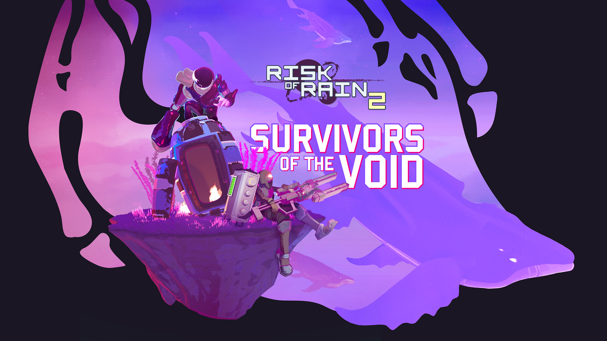

Ramble Of The Week Archival (27/04/2022)
Risk Of Rain 2 and Meeting Expectations.

Risk Of Rain, to those unfamiliar, is one of the original indie Roguelikes. Though 2 years older than Binding of Isaac and never quite reaching the same status, the original game became a cult classic of sorts, or at least it did to me. As a kid, Risk Of Rain was one of my favorite games, though one I was far from good at, and one that I didn't play that much of , it still held a great deal of significance to me for one reason or another, I just loved everything about it. The music, which to this day holds up, the art style, the graphics, the writing and the gameplay. Even if at the time my grasp on the gameplay and how it worked on a deeper level was very loose I still decided to grasp onto it when I found out that a sequel to the game had been in development and in Early Acess on Steam.
The original game had become my darling of sorts, I'd go on endless rants about how the first game was better, how they had made a bad sequel by making the second game 3D, by how the gameplay was inferior and et cetera et cetera. It's not that I hadn't tried playing the second one, I had, yet maybe for stubborness, or maybe due to just not "getting it" at the time, it didn't click with me, so for a good, good while, I simply either ignored it or pretended it didn't exist. Fast forward to two or so weeks ago and now I have nearly 100 hours on Risk Of Rain 2, and love it just as much as I do the original.
My problem with the sequel was that it wasn't the same game, but again. What I had always hoped for was for the formula of the first game to be merely expanded upon. higher resolution pixel art, more music, more items, etc etc, all while still being a side scroller and platformer. The idea of playing Risk Of Rain in 3D quite simply was alien, borderline unnaceptable to me. "I was a fan of the first game! I should've gotten more of what I already liked! They should make it for me, not for all these people who don't know there is a first game!" is probably a good TL;DR of what I thought at the time, but nowadays, after falling in love with the "new" game, I wonder, how many people were out there that felt the same as I did? With an All-Time peak number of simultanous players above 71 thousand, surely someone else must've also thought the same way I did.
Of course, with at least 100 thousand units sold on PC alone, the devs probably weren't too worried about what me and a few other knuckleheads thought about their decision of switching to 3D gameplay, but before they had all those copies sold, they must have worried, right? After all, before ROR2 they were a very small team, of just a few guys making a little game with some cool ideas, music and art, and now they wanted to do something much more time consuming, a third-person shooter.
Everyone with an estabilished body of work, when creating a new piece, has to make a decision: Do I stick to what has worked and what my fans expect, or do I make a gamble and do what I want or dream of, even if they might not like it? In this case, Hoppo games, chose the latter option, as I'm very sure most creative people out there will do in a heartbeat. Business and pragmatic people like the proven, the thing that has worked before, it's secure, it brings in money, it's the smart choice most of the time, but for people with a desire, with a passion, to be limited by the conventions of what you've done before or what came before you is often times worse than to have no money. Of course, we still worry about meeting the expectations of those who know us or our work, "what if it's not as good? what if they don't want it? what if it doesn't sell?" But forgetting that we have expectations ourselves is easy. I would say that anyone who is fine with a stagnant life is quite possibly insane, and to live by the same formula over and over would be an awful fate.
There is a balancing act to be made every time we decide to create something and put it out there. Whose expectations do we aim to meet? Our own, which we dreamed of, our wish to make something new and innovating, opposite to what we've made before, or the expectations of the fans? The fans which most likely want just a better version of the old thing, the fans which want a Risk Of Rain in 16 bits instead of 8, the fans who don't "get" the game when it's in 3D, the ones that are not fans of how much more mechanical skill is involved in a game set in a 3D space. It's not as if said fans (in general) have invalid opinions and wishes, they just want that which they already like, that which is comforting, familiar, and we as creators may like the idea of that too, but how long can we stay in the familiar until we are stuck in it?